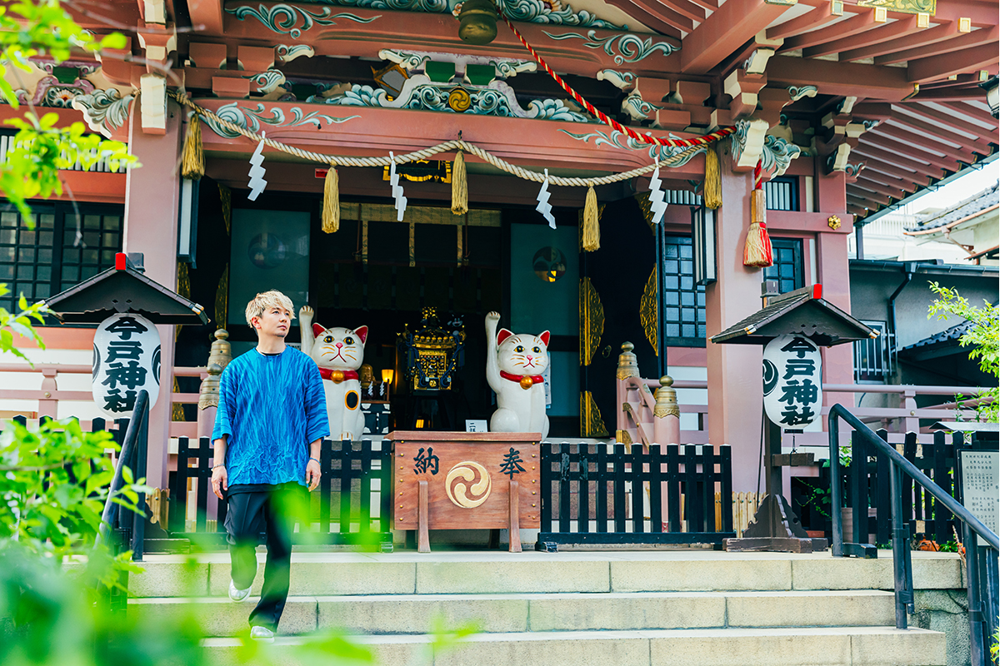
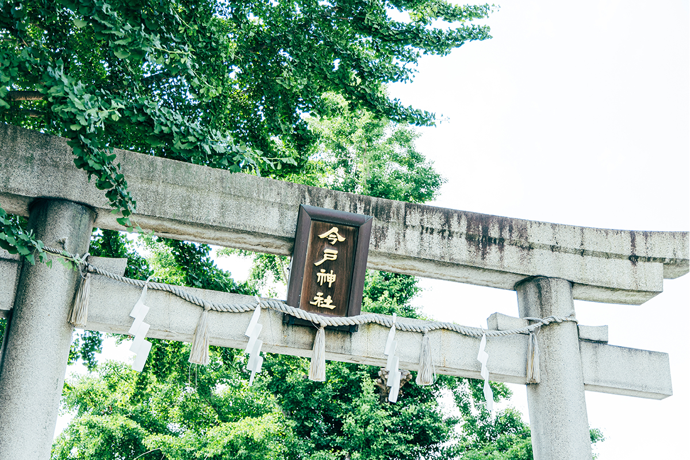
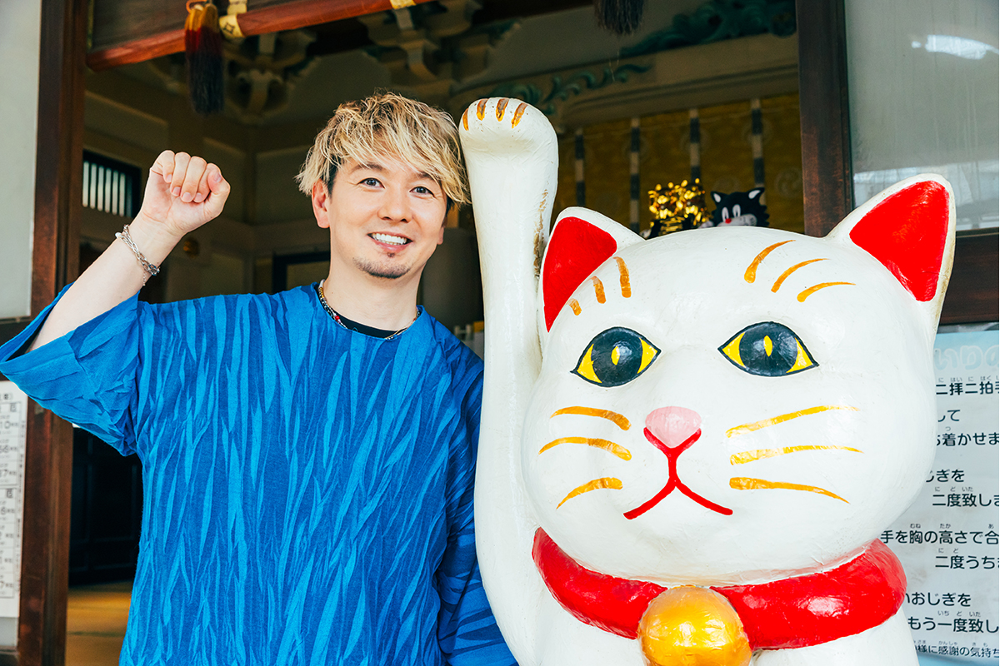
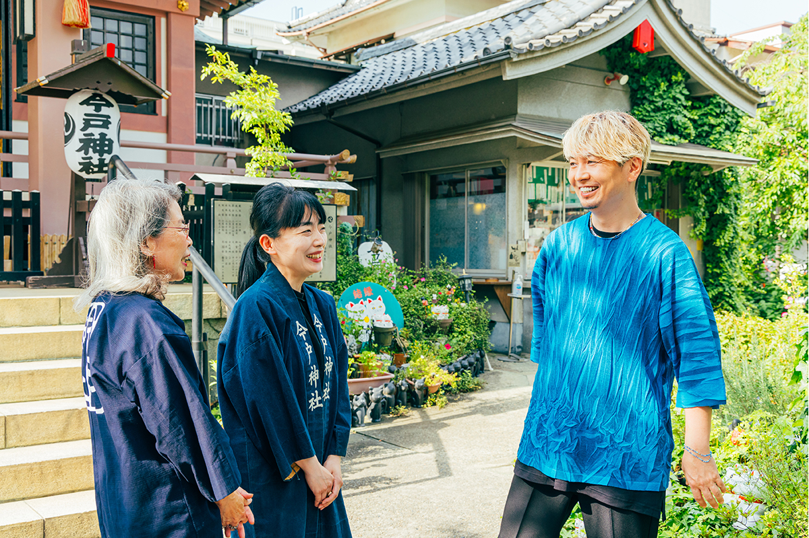
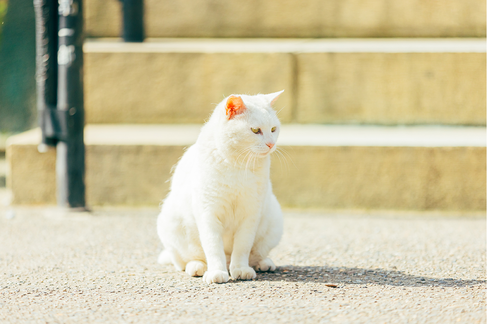
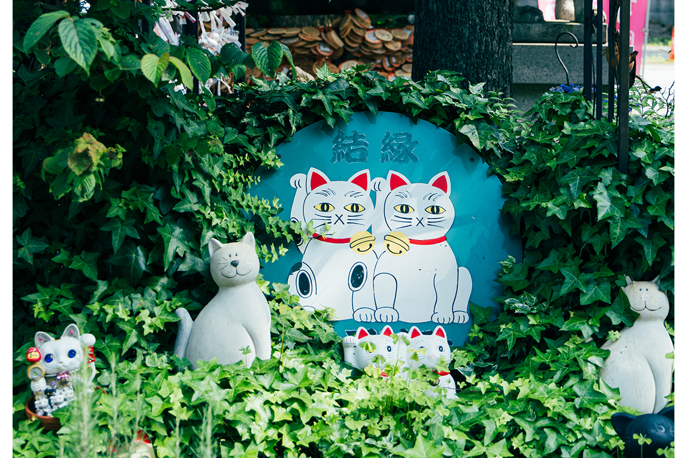
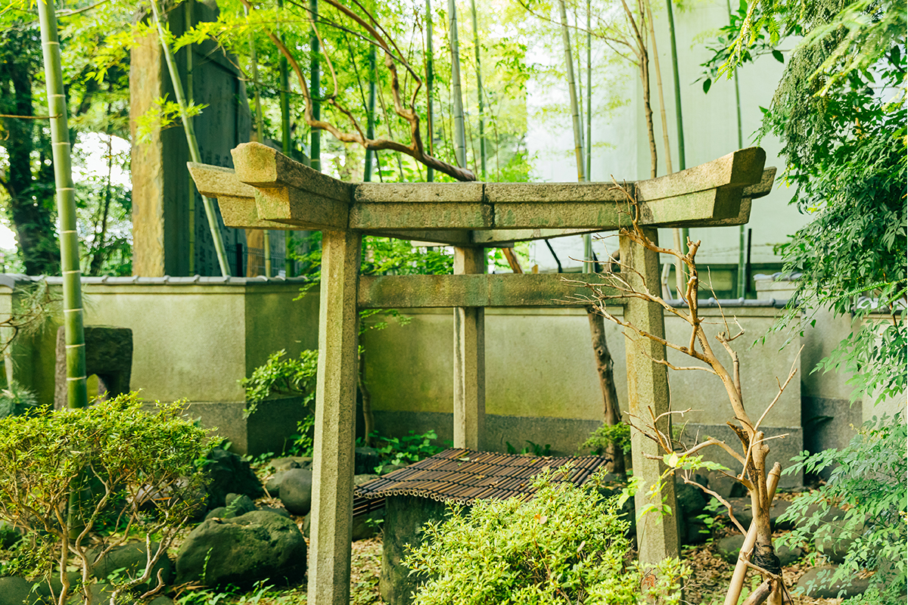
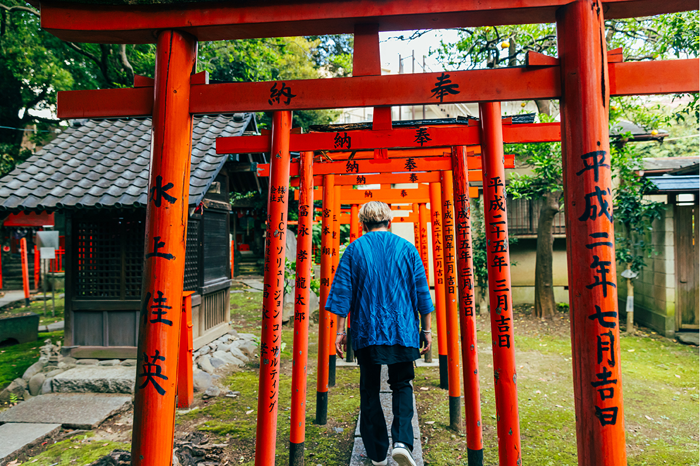
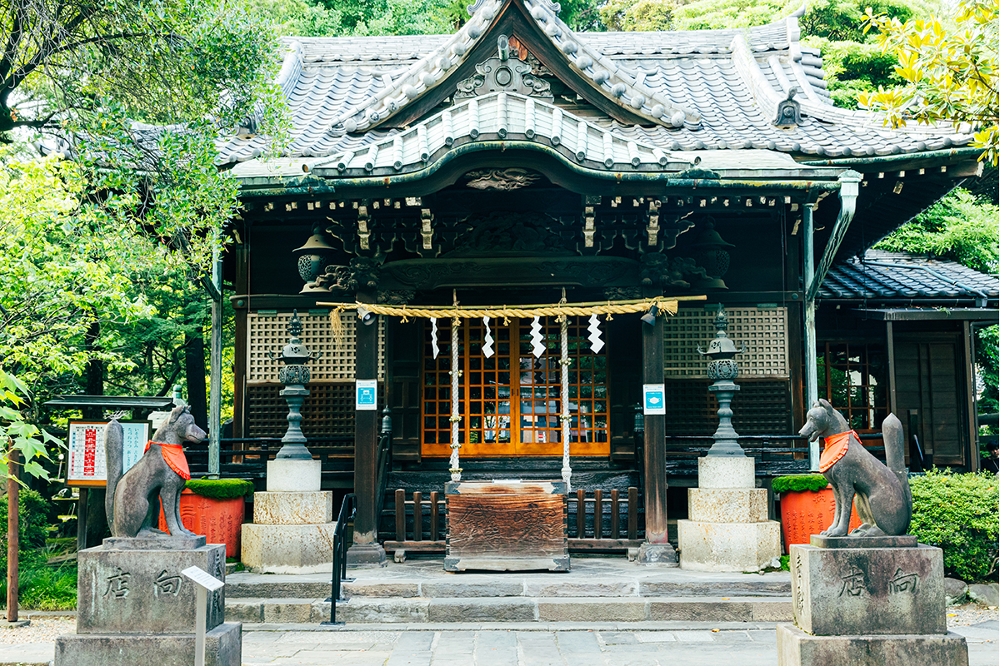
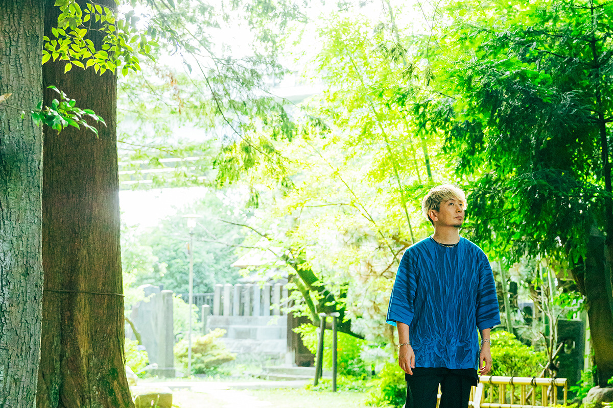

Токио · Асакуса и Мукодзима · святилища
Кошки и лисы у реки Сумида: святилища Имадо и Мимэгури

В нескольких кварталах от шумной Асакусы, по обе стороны реки Сумида, стоят два небольших святилища. В одном живут кошки, в другом лисы, и в оба приходят за тишиной, которой так не хватает у главных храмов города.
Путь
Святилища как способ встретиться с собой
По святилищам двух берегов Сумиды провёл известный японский регги-музыкант. Обходить святилища и святые места страны стало для него делом жизни. Началось всё с телепередачи, где популярная гадалка назвала его человеком с редкой удачей, какая бывает «одна на десятки тысяч». С тех пор его прозвали «ходячим местом силы», а по стране пошёл слух: поставишь его фото на заставку телефона, и удача повернётся к тебе.
«Сначала мне было неловко. Но люди стали ждать от меня этого, и я решил принять эту роль по-своему: стать тем, кто подталкивает других и помогает им улыбаться»
музыкант
Он завёл дома алтарь камидана и каждый день, как бы ни был занят, ходил поклониться местному божеству-покровителю. Святилища, по его словам, всегда строили в приятных местах, и для жителей округи они были опорой. Когда стоишь с молитвенно сложенными руками в чистом воздухе и чувствуешь, сколько веков прошло через это место, на душе светлеет, и само собой приходит чувство благодарности.
«Главное в святилище то, что здесь можно встретиться с самим собой. В современном обществе мы всё время сравниваем себя с другими и оглядываемся на чужое мнение. А когда приходишь в святилище один и неторопливо, как положено, совершаешь поклон, ты делаешь это потому, что сам так решил. Ты снова опираешься на себя»
музыкант
Чем больше святилищ он обходил, тем сильнее любил Японию. Святилище, говорит он, это самая близкая дверь к тому, чтобы понять, что значит быть японцем.
Имадо
Святилище, где родился манэки-нэко

Первым в маршруте стало святилище Имадо. Оно стоит чуть в стороне от толпы Асакусы и храма Сэнсо-дзи. По преданию, его основал в 1063 году Ёриёси Минамото (988–1075), полководец, который победил в долгой войне на севере страны и перенёс сюда божество из святилища Ивасимидзу Хатимангу в Киото.
Здесь почитают императора Одзина, а также Идзанаги и Идзанами, первую супружескую пару японских мифов. Их считают покровителями брака, поэтому в Имадо просят о хорошей встрече, взаимной любви и согласии в семье. Сюда приезжают со всей страны, и больше всего среди паломников женщин. Есть здесь и Фукурокудзю, один из Семи богов счастья Асакусы. Даже адрес святилища, Имадо 1-5-22, звучит по-японски как «хорошая супружеская пара».
Имадо называют и родиной манэки-нэко, кошки, которая подзывает удачу поднятой лапой. В эпоху Эдо в этих кварталах лепили керамику имадо-яки, и кошачьи фигурки отсюда вошли в большую моду. Они и стали образцом для манэки-нэко по всей Японии.

«С тех пор как меня стали называть ходячим местом силы, кошки с поднятой лапой стали мне как родные. Когда я впервые приехал сюда на съёмку для журнала, жена настоятеля встретила меня так просто и тепло, что у меня на душе стало спокойно. Имадо показало мне, что святилище рядом и в него можно приходить запросто»
музыкант

С тех пор он много раз приходил сюда, и по работе, и просто так. Под ясным небом, под присмотром кошек, расставленных по всему двору, он тихо складывает руки. Свои правила у него простые: приходить лучше утром, пока воздух чистый; в незнакомом святилище сначала получить печать госюин и поклониться, а уже потом фотографировать. И перед божеством он не только благодарит, но и даёт обещание.
«Когда отключаешься от потока информации и слушаешь свой внутренний голос, снова видишь, чего на самом деле хочешь добиться. Если сказать об этом божеству вслух, это придаёт огромные силы»
музыкант


Святилище Имадо
- Адрес
- Токио, район Тайто, Имадо, 1-5-22
- Телефон
- +81 3-3872-2703
- Часы работы
- 9:00–16:00
- Цены / Вход
- бесплатно
Мимэгури
Белая лиса и семья Мицуи
Дальше маршрут ведёт через реку Сумида, в Мукодзиму, к святилищу Мимэгури. По преданию, его основал в начале эпохи Хэйан Кукай (774–835), монах, известный также как Кобо-дайси, основатель буддийской школы Сингон. Позже, в XIV веке, святилище восстанавливал странствующий монах из храма Миидэра в провинции Оми. Под зданием святилища тогда нашли статую божества, и откуда ни возьмись появилась белая лиса: она трижды обошла статую. Отсюда и название, которое значит «трижды обойти».
В иероглифе «окружать» из названия святилища спрятан знак «колодец», как в фамилии Мицуи. Поэтому ещё с эпохи Эдо Мимэгури почитают как покровителя компаний группы Мицуи. Во дворе стоит святилище предков семьи Мицуи, а его здание и тройные ворота торий были подарены святилищу из усадьбы Мицуи.

В первый раз музыкант пришёл сюда не за благословением и не по работе. По его словам, его будто позвали.
«Мне стали интересны эти тройные ворота. Пришёл поклониться и попал под обаяние особой, строгой атмосферы, а когда узнал о связи с семьёй Мицуи, захотелось разобраться глубже. Мимэгури живёт одной жизнью с районом, и шума здесь нет, так что лучше места, чтобы спокойно побыть с собой, не найти»
музыкант

Главное божество Мимэгури это Уканомитама-но микото, то же, что почитают в святилище Фусими Инари-тайся в Киото. Его просят о процветании торговли, благополучии семьи и успехах компании. Здание святилища, по преданию, построили в 1862 году, и у входа гостей встречают лисы с добрыми мордами, которых ласково зовут «Конкон-сан».

Любопытство, говорит музыкант, тоже выросло у него из прогулок по святилищам. Если разбираться, откуда взялось святилище, кому оно посвящено и какие мифы с ним связаны, ходить становится интереснее, а с таким любопытством богаче становится и вся жизнь.

«В Асакусе много всего: оживлённая улица Накамисэ, кухня старого Эдо. Но если пройти чуть дальше и зайти в святилище, которое живёт вместе с районом, историю чувствуешь куда глубже. Для этого лучше всего начать с востока Токио. Святилищ в Японии очень много: найдите своё, к которому привяжетесь, и заодно познакомьтесь с местной жизнью»
музыкант
Святилище Мимэгури
- Адрес
- Токио, район Сумида, Мукодзима, 2-5-17
- Телефон
- +81 3-3622-2672
- Часы работы
- 9:00–17:00, с 1 ноября по 28 февраля до 16:30
- Цены / Вход
- бесплатно
Фото: Майко Фукуи.